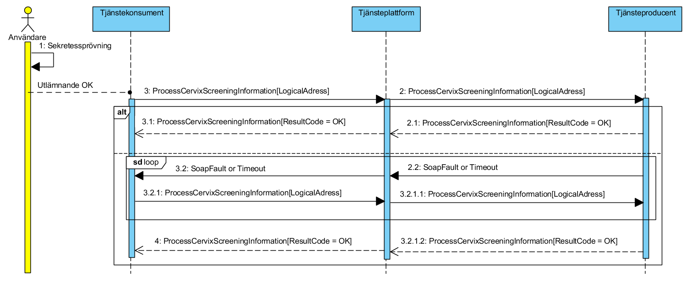

clinicalprocess: logistics: cervixscreening
1.0.0-rc4 - RC
clinicalprocess: logistics: cervixscreening - Local Development build (v1.0.0-rc4) built by the FHIR (HL7® FHIR® Standard) Build Tools. See the Directory of published versions
Källa: Tjänstekontraktsbeskrivning, Screeningstöd livmoderhals, version 1.0_RC4 (2020-12-09), TKB_clinicalprocess_logistics_cervixscreening.docx.
I detta avsnitt beskrivs hur T-boken tillämpats i tjänstedomänen. Avsnittet syftar till att ge läsaren överblick och förståelse. Avsnittet innehåller inga regler, men ger ett sammanhang för de regler som beskrivs i övriga delar av dokumentet.
För detaljerad beskrivning av verksamhetsscenarion och informationsflöden hänvisas till [R3].
Nedan redovisas en kortfattad beskrivning av verksamhetsscenarion för att underlätta förståelsen av den tekniska lösningen.
Kvinna lämnar prov i annan region – Kvinna nyttjar det fria vårdvalet. Och lämnar ett cellprov i annan provtagande region än hemregionen.
Resultatet av det analyserade cellprovet registreras i system hörandes till provtagande region.
Provtagande region kontrollerar och upptäcker att provet tillhör kvinna som bor i annat län.
Vilket triggar system i den provtagande region att skicka relevant kallelsegrundande information till kallelsekansliet i kvinnas hemregion.
System hos kallelsekansli hörandes till kvinnas hemregion tar emot information från system i provtagande region
Kvinna behandlas i annan region – Kvinna nyttjar det fria vårdvalet för att genomgå behandling. Och söker vård och behandling i annan region än hemregionen.
Behandlande region kontrollerar och upptäcker att kvinna bor i annat län. Detta triggar system i den behandlande regionen att skicka relevant kallelsegrundande information om utförd vård och behandling till kallelsekansli i kvinnas hemregion
Nedanstående sekvensdiagram är tillämpligt för de olika scenariona enligt ovan. Dvs systeminteraktionen är densamma.
Tjänstekontraktet ProcessCervixScreeningInformation används i alla tre fallen för att överföra relevant kallelsegrundande information från sändande tjänstekonsument till mottagande tjänsteproducent.

I sekvensdiagrammet ovan föregås varje enskilt elektroniska utlämnande av en manuell sekretessprövning (aktören Användare). I de fall den manuella sekretessprövningen medger ett elektroniskt utlämnande initierar tjänstekonsumenten interaktionen via anrop av tjänstekontraktet. Om utlämnande ej medges skall inget anrop av tjänstekontraktet ske.
Hur den manuella sekretessprövningen implementeras i respektive region beskrivs inte närmare i detta dokument. Det är upp till varje region (huvudman) att säkerställa att elektroniskt utlämnande sker på ett korrekt sätt enligt [R6].
Följande tabell specificerar vilka kontrakt som är obligatoriska att realisera för respektive flöde.
| Tjänstekontrakt | Kvinna flyttar mellan regioner / (flyttar över länsgräns) | Kvinna lämnar prov i annan region | Kvinna behandlas i annan region |
|---|---|---|---|
| ProcessCervixScreeningInformation | X | X | X |
Adressering sker i enlighet med RIV Tekniska Anvisningar Översikt (version 2.0.4 – 2018-08-27) avsnitt 8.3 där mer information kan hittas.
Tjänstedomänen tillämpar verksamhetsadressering.
Inom denna domänen används en regions länskod som logisk adress. Endast en logisk adress per region är tillåten i kommunikationsrutinen.
Enligt nationella vårdprogrammet [R5] är det en kvinnas folkbokföringsadress (länskoden) som avgör vilken region (huvudman) som har till ansvar att kalla en kvinna till screening.
| Informationsförsörjning kallelseinformation | Logisk adress |
|---|---|
| För en region | Länskod (kv/län – 1.2.752.129.2.2.1.18) |